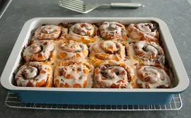

Apple Butter Cinnamon Rolls
HOME

DICRIPTION
Apple Butter Cinnamon Rolls are soft, sweet rolls filled with cinnamon,
brown sugar, and smooth apple butter. They are warm, flavorful, and perfect for breakfast or a sweet treat.
INGRIDIENT
- Flour
- Milk
- Butter
- Sugar
- Yeast
- Apple butter
- Brown sugar
- Cinnamon
- Salt
STEPS
- Mix the flour, yeast, sugar, salt, milk, and butter to make a soft dough.
- Let the dough rise until it doubles in size.
- Roll out the dough and spread apple butter over it.
- Sprinkle with brown sugar and cinnamon.
- Roll the dough tightly and cut into rolls.
- Bake at 180°C (350°F) until golden brown.
- Allow the rolls to cool slightly, then serve.